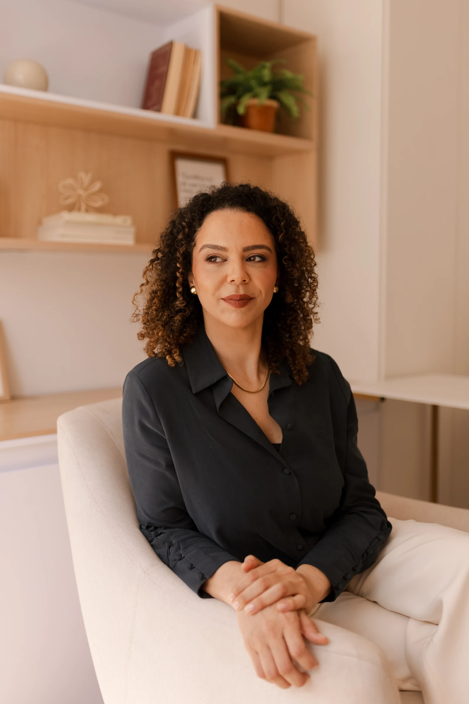

Sobre mim
Bruna Campos
Laranjeira Moraes
Médica psiquiatra com uma prática voltada para adultos que procuram uma avaliação cuidadosa, individualizada e com tempo para compreender sintomas, história e contexto.
Médica Psiquiatra · CRM 5291655-2 · RQE 23225
Atendimento particular de adultos

Minha forma de trabalhar
Psiquiatria com tempo para compreender a pessoa por inteiro.
Meu trabalho parte de uma ideia simples: uma consulta psiquiátrica precisa de tempo para compreender os sintomas, a história, o contexto e a pessoa que está vivendo tudo aquilo.
Ao longo de 15 anos de medicina e mais de 4.500 atendimentos, construí uma prática voltada para adultos que procuram uma avaliação cuidadosa, individualizada e baseada em evidências.
No consultório, ansiedade, depressão e TDAH em adultos estão entre as demandas que acompanho com maior frequência. Cada avaliação parte do que está acontecendo naquele momento, sem reduzir a pessoa a um diagnóstico ou a uma lista de sintomas.
Entenda como funciona o atendimentoFormação e trajetória
Uma trajetória construída dentro e além da psiquiatria.
Graduação, residência médica e formações complementares que fazem parte da minha trajetória profissional.
Além do consultório
Carreira médica, educação e empreendedorismo.
Além das formações complementares na área de Saúde Mental, também sou empresária. Em 2021 fundei a BC Academy, uma escola de carreira médica no consultório particular que já treinou mais de 600 médicos.
Também fundei o Vida de Consultório, o primeiro portal sobre carreira médica no consultório particular do Brasil.
Atendimento particular
Se você procura uma avaliação psiquiátrica cuidadosa, conheça como funciona o atendimento.
Consultas para adultos, presencialmente na Barra da Tijuca ou por teleconsulta.
Agendar consulta